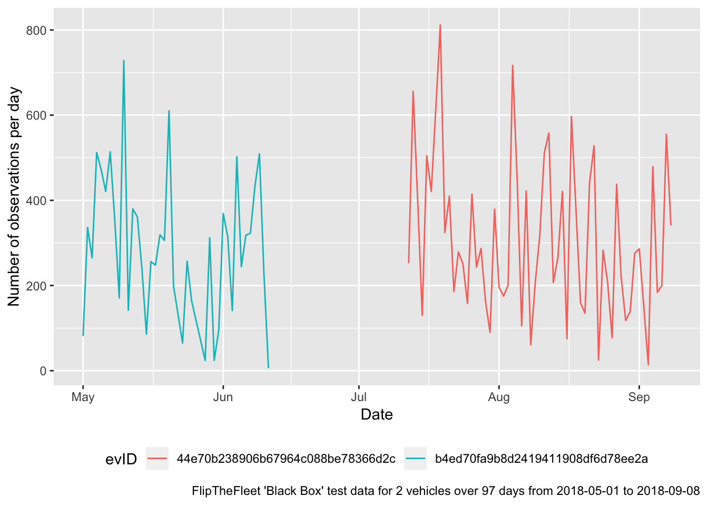
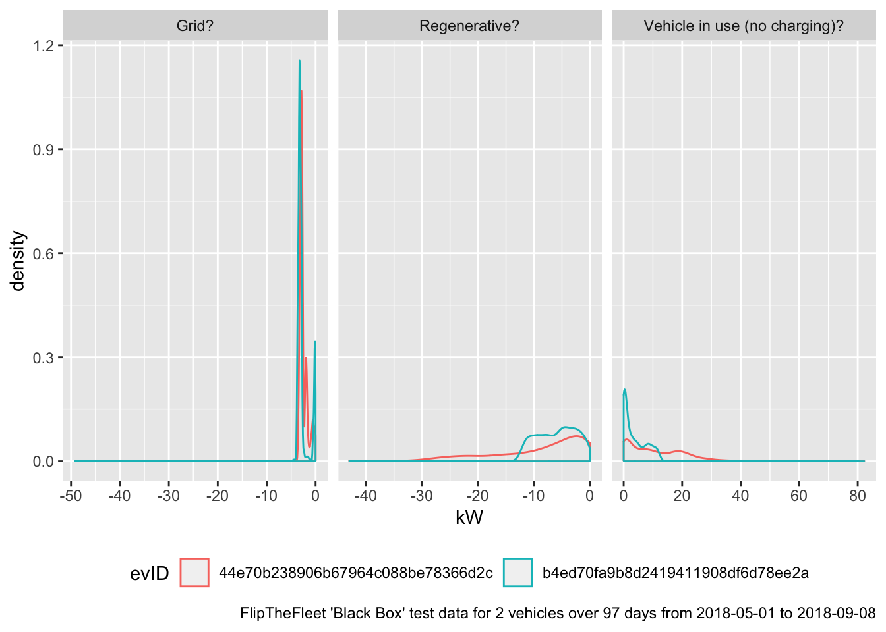

FlipTheFleet Black Box Data Tests
Testing Time of Charging
Ben Anderson (b.anderson@soton.ac.uk, @dataknut)
Last run at: 2018-10-29 17:05:35
1 License
This work is licensed under a Creative Commons Attribution 4.0 International License unless otherwise marked. 
2 Citation
If you wish to use any of the material from this report please cite as:
- Anderson, B. (2018) FlipTheFleet Black Box Data Tests: Testing Time of Charging, Centre for Sustainability, University of Otago: Dunedin, New Zealand.
3 About
3.1 Purpose
This report is intended to:
- load and test preliminary ‘black box’ (see Figure 3.1) EV monitoring data provided for assessment purposes by FlipTheFleet
- preliminary analysis of time of charging to understand impact on ‘peak’ electricity demand

Figure 3.1: The Black Box (Source: FlipTheFleet)
3.2 Requirements:
- a safe version of the test FlipTheFleet black box dataset stored on the University of Otago’s High-Capacity Central File Storage HCS at: /Volumes/hum-csafe/Research Projects/GREEN Grid/externalData/flipTheFleet/safe/ftfSafeLatestAll.csv.gz
- original data made safe using ftf/dataProcessing/makeSafe.R
3.3 Code and report history
See:
3.4 Support
This work was supported by:
- The New Zealand Ministry of Business, Innovation and Employment (MBIE) through the Renewable Energy and the Smart Grid (GREEN Grid) project;
- SPATIALEC - a Marie Skłodowska-Curie Global Fellowship based at the University of Otago’s Centre for Sustainability (2017-2019) & the University of Southampton’s Sustainable Energy Research Group (2019-2020).
4 Load and check data
4.1 Load data
In this section we load and describe the pre-processed safe data from /Volumes/hum-csafe/Research Projects/GREEN Grid/externalData/flipTheFleet/safe/ftfSafeLatestAll.csv.gz. Note that this data does not contain Latitude/Longitude or the vehicle registration number. This has been replaced by a unique hash code (per vehicle).
ftfSafeDT <- data.table::as.data.table(readr::read_csv(dFile))## Parsed with column specification:
## cols(
## .default = col_integer(),
## `Date (GPS)` = col_character(),
## Altitude = col_double(),
## `Speed (GPS)` = col_double(),
## `Speed (Speedometer)` = col_double(),
## SOC = col_double(),
## AHr = col_double(),
## `Pack volts` = col_double(),
## `Pack amps` = col_double(),
## `Pack 1 temp (C)` = col_double(),
## `Pack 2 temp (C)` = col_double(),
## `Pack 3 temp (C)` = col_double(),
## `Pack 4 temp (C)` = col_double(),
## `12V battery (amps)` = col_double(),
## Hx = col_double(),
## VIN = col_character(),
## `12V battery (volts)` = col_double(),
## `ACC (V)` = col_double(),
## SOH = col_double(),
## `SOH (version 2)` = col_double(),
## `Charger (amps)` = col_double()
## # ... with 86 more columns
## )## See spec(...) for full column specifications.## Warning in rbind(names(probs), probs_f): number of columns of result is not
## a multiple of vector length (arg 1)## Warning: 11793 parsing failures.
## row # A tibble: 5 x 5 col row col expected actual file expected <int> <chr> <chr> <chr> <chr> actual 1 12490 cabin_t… no trailing c… .6666666… '/Volumes/hum-csafe/Research Pr… file 2 12494 cabin_t… no trailing c… .6666666… '/Volumes/hum-csafe/Research Pr… row 3 12496 cabin_t… no trailing c… .6666666… '/Volumes/hum-csafe/Research Pr… col 4 12499 cabin_t… no trailing c… .2222222… '/Volumes/hum-csafe/Research Pr… expected 5 12501 cabin_t… no trailing c… .2222222… '/Volumes/hum-csafe/Research Pr…
## ... ................. ... .......................................................................... ........ .......................................................................... ...... .......................................................................... .... .......................................................................... ... .......................................................................... ... .......................................................................... ........ ..........................................................................
## See problems(...) for more details.# re-create rDate & rTime
ftfSafeDT <- ftfSafeDT[, rTime := hms::as.hms(rDateTime)]
ftfSafeDT <- ftfSafeDT[, rDate := lubridate::date(rDateTime)]
# re-create rDow to stop it acting like a factor with alphabetic ordering
ftfSafeDT <- ftfSafeDT[, rDow := lubridate::wday(rDateTime, lab = TRUE)]That loaded 46,741 observations from 2 vehicles. Table 4.1 summarises the available data for each EV.
| evID | obsStart | obsEnd | nObservations |
|---|---|---|---|
| 44e70b238906b67964c088be78366d2c | 2018-07-12 11:02:49 | 2018-09-08 15:27:48 | 34254 |
| b4ed70fa9b8d2419411908df6d78ee2a | 2018-05-01 12:42:27 | 2018-06-11 09:40:28 | 12487 |
4.2 Check data quality
Next we check for NA in dates and other key variables.
| Date (GPS) | Time (GPS) | nObs | meanPackVolts |
|---|---|---|---|
| NA | NA | 17472 | 90.15239 |
| Date (GPS) | Time (GPS) | nObs | meanPackAmps |
|---|---|---|---|
| NA | NA | 17472 | 16.5822 |
It looks like there are NAs in the GPS derived Date & Time variables.
Since we really need to know the date and time, we remove these NAs from the data although they comprise 17472 (37.38 %) observations.
GPS NA means no GPS signal. This could be when the vehicle is charging inside a garage or passes through a tunnel. As we need to know the date & time of charging for all observations, this will need to be fixed.
4.3 Check variables of interest for this analysis
Check charger related variables. These are:
Pack ampsPack volts
DM: “To determine charger power the variables ‘Pack volts’ and ‘Pack amps’ give you everything you need (with some extra code to separate out regen, and it is also useful to do some deltas of voltage and SoC over time to deal with noise in the current sensors). Negative pack amps with speed also at zero is charging (speed greater than zero and negative pack amps is regen).”
Multiplying these two will give power in W. Figures 4.1 to 4.3 examine the distribution of amps, volts and the derived W.
Figure 4.1 shows a density plot for pack amps by EV and by whether or not the amps are -ve, +ve or 0. As we can see, positive amps (providing power to the vehicle) has a cluster of readings close to 0 and then a long positive tail. Negative amps (re-charging the battery) appears to have two distinct clusters and a similarly long negative tail. Only one vehicle reports a large number of 0 Amp readings.
| ampFlag | evID | nObs | max | mean | min |
|---|---|---|---|---|---|
| Negative amps | 44e70b238906b67964c088be78366d2c | 14415 | -0.001 | -8.029587 | -125.991 |
| Negative amps | b4ed70fa9b8d2419411908df6d78ee2a | 9522 | -0.001 | -8.377448 | -32.754 |
| Positive amps | 44e70b238906b67964c088be78366d2c | 3524 | 214.546 | 30.152265 | 0.001 |
| Positive amps | b4ed70fa9b8d2419411908df6d78ee2a | 1624 | 32.747 | 10.534372 | 0.002 |
| Zero amps | 44e70b238906b67964c088be78366d2c | 3 | 0.000 | 0.000000 | 0.000 |
| Zero amps | b4ed70fa9b8d2419411908df6d78ee2a | 181 | 0.000 | 0.000000 | 0.000 |
Figure 4.1: Distribution of Pack amp readings by car
Next we check volts. Again we seperate -ve and +ve values. In this case it appears that we should probably filter out:
- -ve volts
- volts > 1000
| voltFlag | evID | nObs | max | mean | min |
|---|---|---|---|---|---|
| Negative volts | 44e70b238906b67964c088be78366d2c | 8 | 0.000 | 0.0000 | 0.000 |
| Negative volts | b4ed70fa9b8d2419411908df6d78ee2a | 87 | 0.000 | 0.0000 | 0.000 |
| Positive volts | 44e70b238906b67964c088be78366d2c | 17934 | 397.056 | 382.9832 | 340.320 |
| Positive volts | b4ed70fa9b8d2419411908df6d78ee2a | 11240 | 5783.520 | 430.0139 | 269.856 |
Figure 4.2: Distribution of charger volt readings
Finally (Figure 4.3) shows the distirbution of the derived -ve, zero and +ve power values using the following filters:
- volts < 0 and volts > 1000 = “Volt error?”
| powerFlag | evID | nObs | max | mean | min |
|---|---|---|---|---|---|
| Negative power | 44e70b238906b67964c088be78366d2c | 14411 | -0.396384 | -3077.387 | -49196.687616 |
| Negative power | b4ed70fa9b8d2419411908df6d78ee2a | 9318 | -0.383712 | -3197.947 | -12530.626560 |
| Positive power | 44e70b238906b67964c088be78366d2c | 3520 | 82266.190464 | 11284.541 | 0.396576 |
| Positive power | b4ed70fa9b8d2419411908df6d78ee2a | 1611 | 12831.848640 | 3936.218 | 0.740352 |
| Volt error? | 44e70b238906b67964c088be78366d2c | 8 | NA | NA | NA |
| Volt error? | b4ed70fa9b8d2419411908df6d78ee2a | 280 | NA | NA | NA |
| Zero power | 44e70b238906b67964c088be78366d2c | 3 | 0.000000 | 0.000 | 0.000000 |
| Zero power | b4ed70fa9b8d2419411908df6d78ee2a | 118 | 0.000000 | 0.000 | 0.000000 |
## `stat_bin()` using `bins = 30`. Pick better value with `binwidth`.## Warning: Removed 288 rows containing non-finite values (stat_bin).Figure 4.3: Distribution of derived power demand using these filters
As noted above, battery charging will be occuring when power is negative. This will be from the grid when speed is zero.
5 Analysis: Number of observations over time
Just a simple trend line for each vehicle… Note that the Reg No has been replaced with a unique hash ID.

6 Analysis: Power flows to/from batteries
We use Speed (Speedometer) as this has no missing values (unlike Speed (GPS)) to flag observations which should be electricity grid based as opposed to regenerative charging.
| chargingFlag | minSpeed | meanSpeed | maxSpeed |
|---|---|---|---|
| Vehicle in use (no charging)? | 0.00 | 41.60903 | 111.82 |
| Regenerative? | 2.87 | 51.16671 | 101.97 |
| Grid? | 0.00 | 0.00000 | 0.00 |
| evID | chargingFlag | meankW | sdkW | mediankW |
|---|---|---|---|---|
| 44e70b238906b67964c088be78366d2c | Grid? | -2.786912 | 3.229894 | -2.816239 |
| 44e70b238906b67964c088be78366d2c | Regenerative? | -9.053428 | 8.645677 | -6.050238 |
| 44e70b238906b67964c088be78366d2c | Vehicle in use (no charging)? | NA | NA | NA |
| b4ed70fa9b8d2419411908df6d78ee2a | Grid? | -2.833136 | 1.224567 | -3.179782 |
| b4ed70fa9b8d2419411908df6d78ee2a | Regenerative? | -5.895578 | 3.447599 | -5.543476 |
| b4ed70fa9b8d2419411908df6d78ee2a | Vehicle in use (no charging)? | NA | NA | NA |
Figure ?? shows the expected clustering of grid-based charging in the < 5 kW region.
## Warning: Removed 288 rows containing non-finite values (stat_density).
7 Analysis: Timing of charging
Figure 7.1 shows mean kW for inferred grid-based charging by time of day over the entire test datset of 97 days from 2018-05-01 to 2018-09-08.
Does this look like what we expect?
## Warning: Removed 268 rows containing missing values (geom_point).Figure 7.1: Inferred charging times and power draw (all data)
Figure 7.2 reproduces the previous plot but only shows the mean power flow for observations which we think are Grid? charging and plots them by derived location. This highlights a few observations with apparently large power flows - is this fast charging or instrument error?
Figure 7.2: Timing of power flow (all)
Finally, 7.3 shows the mean power flow by time of day and derived location using a tile plot with notional peak electricity demand periods marked. This visually masks rare events such as the large power flows and suggests charging timing patterns that make sense?
Figure 7.3: Timing of charging from the grid
8 Conclusions
Questions to be asked
- Data:
- Do the Amp & Volt distributions look right?
- Cause of Pack amp & Pack volt outliers?
- Date/Time NA (37.38 % of observations) are due to a lack of GPS date/time (and lat/long). Does this mean that there is no date/time in the data when GPS has no signal? Our tests suggest that other data (e.g. power etc) is logged even though there is no date/time. Do we need another source of date/time? Could we infer time from seconds since powered on (assumes GPS OK at start-up?)?
- Research:
- Do all FlipTheFleet EV owners charge like this?
- Where are the EVs being charged when not at home and how can we tell?
- Does it vary by car/tariff/commute pattern/main use?
- What other patterns exist and how much within-vehicle and between-vehicle variation is there?
9 Runtime
Analysis completed in 16.23 seconds ( 0.27 minutes) using knitr in RStudio with R version 3.5.1 (2018-07-02) running on x86_64-apple-darwin15.6.0.
10 R environment
R packages used:
- base R - for the basics (R Core Team 2016)
- data.table - for fast (big) data handling (Dowle et al. 2015)
- lubridate - date manipulation (Grolemund and Wickham 2011)
- ggplot2 - for slick graphics (Wickham 2009)
- readr - for csv reading/writing (Wickham, Hester, and Francois 2016)
- openssl - for hashing
Reg No(Ooms 2018) - knitr - to create this document & neat tables (Xie 2016)
- dkUtils - various utilities
- evAnalysis - for EV data functions
Session info:
## R version 3.5.1 (2018-07-02)
## Platform: x86_64-apple-darwin15.6.0 (64-bit)
## Running under: macOS High Sierra 10.13.6
##
## Matrix products: default
## BLAS: /Library/Frameworks/R.framework/Versions/3.5/Resources/lib/libRblas.0.dylib
## LAPACK: /Library/Frameworks/R.framework/Versions/3.5/Resources/lib/libRlapack.dylib
##
## locale:
## [1] en_NZ.UTF-8/en_NZ.UTF-8/en_NZ.UTF-8/C/en_NZ.UTF-8/en_NZ.UTF-8
##
## attached base packages:
## [1] stats graphics grDevices utils datasets methods base
##
## other attached packages:
## [1] knitr_1.20 evAnalysis_0.1 skimr_1.0.3
## [4] codebook_0.6.3 Hmisc_4.1-1 Formula_1.2-3
## [7] survival_2.42-6 lattice_0.20-35 readr_1.1.1
## [10] lubridate_1.7.4 ggplot2_3.1.0 dplyr_0.7.7
## [13] data.table_1.11.8 dkUtils_0.0.0.9000
##
## loaded via a namespace (and not attached):
## [1] splines_3.5.1 shiny_1.1.0 assertthat_0.2.0
## [4] highr_0.7 latticeExtra_0.6-28 yaml_2.2.0
## [7] pillar_1.3.0 backports_1.1.2 glue_1.3.0
## [10] digest_0.6.18 RColorBrewer_1.1-2 promises_1.0.1
## [13] checkmate_1.8.5 colorspace_1.3-2 htmltools_0.3.6
## [16] httpuv_1.4.5 Matrix_1.2-14 plyr_1.8.4
## [19] pkgconfig_2.0.2 labelled_1.1.0 haven_1.1.2
## [22] bookdown_0.7 purrr_0.2.5 xtable_1.8-3
## [25] scales_1.0.0 jpeg_0.1-8 later_0.7.5
## [28] htmlTable_1.12 tibble_1.4.2 openssl_1.0.2
## [31] withr_2.1.2 nnet_7.3-12 lazyeval_0.2.1
## [34] cli_1.0.1 magrittr_1.5 crayon_1.3.4
## [37] mime_0.6 evaluate_0.12 fansi_0.4.0
## [40] forcats_0.3.0 foreign_0.8-71 tools_3.5.1
## [43] hms_0.4.2 stringr_1.3.1 munsell_0.5.0
## [46] cluster_2.0.7-1 bindrcpp_0.2.2 compiler_3.5.1
## [49] rlang_0.3.0.1 grid_3.5.1 rstudioapi_0.8
## [52] htmlwidgets_1.3 miniUI_0.1.1.1 base64enc_0.1-3
## [55] labeling_0.3 rmarkdown_1.10 gtable_0.2.0
## [58] reshape2_1.4.3 R6_2.3.0 gridExtra_2.3
## [61] utf8_1.1.4 bindr_0.1.1 rprojroot_1.3-2
## [64] stringi_1.2.4 Rcpp_0.12.19 rpart_4.1-13
## [67] acepack_1.4.1 tidyselect_0.2.5 xfun_0.4References
Dowle, M, A Srinivasan, T Short, S Lianoglou with contributions from R Saporta, and E Antonyan. 2015. Data.table: Extension of Data.frame. https://CRAN.R-project.org/package=data.table.
Grolemund, Garrett, and Hadley Wickham. 2011. “Dates and Times Made Easy with lubridate.” Journal of Statistical Software 40 (3): 1–25. http://www.jstatsoft.org/v40/i03/.
Ooms, Jeroen. 2018. Openssl: Toolkit for Encryption, Signatures and Certificates Based on Openssl. https://CRAN.R-project.org/package=openssl.
R Core Team. 2016. R: A Language and Environment for Statistical Computing. Vienna, Austria: R Foundation for Statistical Computing. https://www.R-project.org/.
Wickham, Hadley. 2009. Ggplot2: Elegant Graphics for Data Analysis. Springer-Verlag New York. http://ggplot2.org.
Wickham, Hadley, Jim Hester, and Romain Francois. 2016. Readr: Read Tabular Data. https://CRAN.R-project.org/package=readr.
Xie, Yihui. 2016. Knitr: A General-Purpose Package for Dynamic Report Generation in R. https://CRAN.R-project.org/package=knitr.